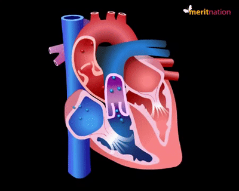
May 2026
| Blood | Pressure |
|
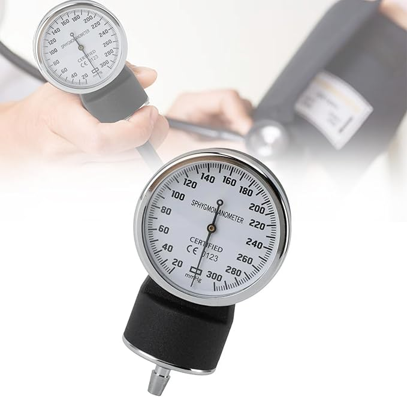 |
Clinic |
|
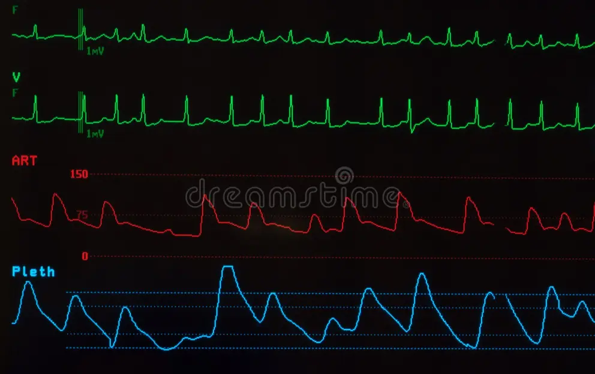 |
Cath Lab |
|
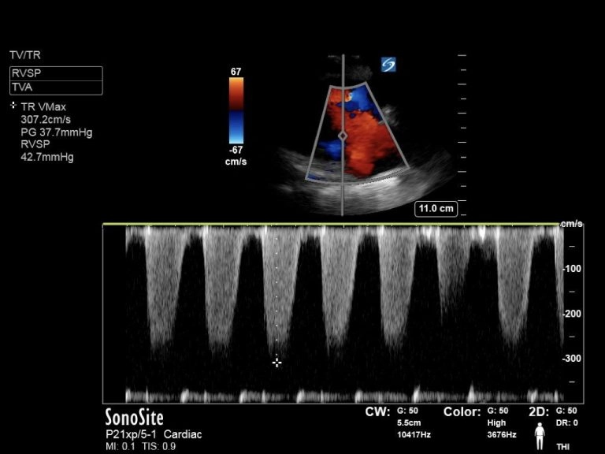 |
Echo Lab |
|
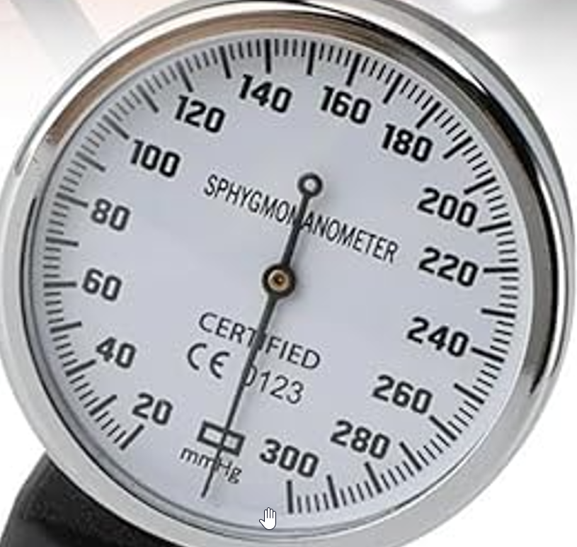 |
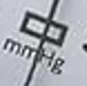 |
|
Units |
mm Hg | cm H$_2$O |
Pascal (Pa = N $\cdot$ m$^{-2}$)
Why Length for Pressure?
|
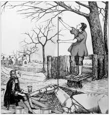 |
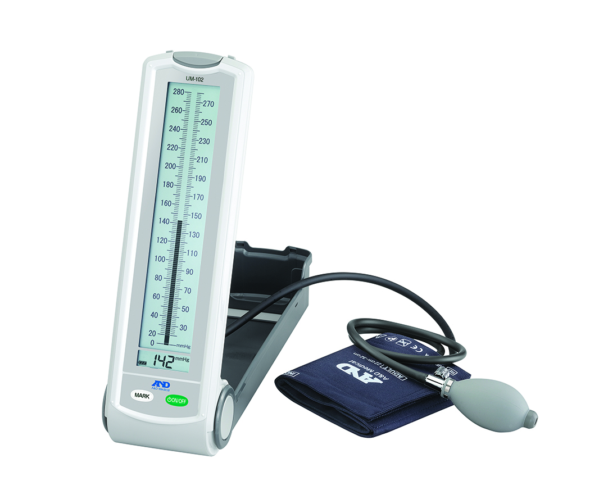 |
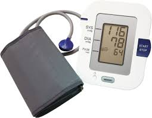 |
\[ P = \rho g h \]
\[ P = \rho g \color{red}{h} \]
\[\ P_\text{atmosphere}= 1.01325 \times 10^5 \;\text{Pa}\]
\[h_\text{mercury}=\frac{1.01325 \times 10^5\; \text{Pa}}{9.81\; \text{m/s$^2$}\times 1.36 \times 10^4\;\text{kg}\cdot\text{m}^{-3}}\approx 0.76 \;\text{m}=760\; \text{mm}\]
\[h_\text{water}=\frac{1.01325 \times 10^5 \;\text{Pa}}{9.81 \;\text{m/s$^2$}\times 1\times 10^3\;\text{kg}\cdot\text{m}^{-3}}\approx 10.3 \;\text{m}\]
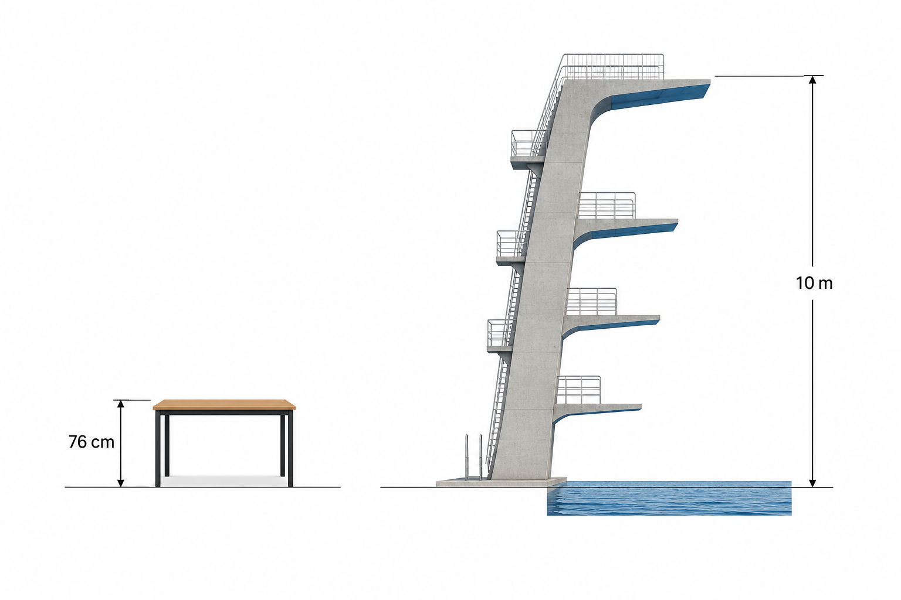
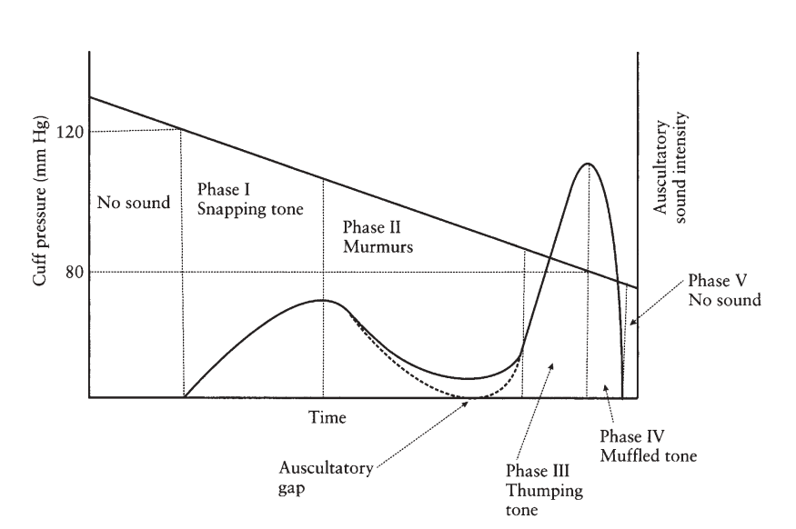
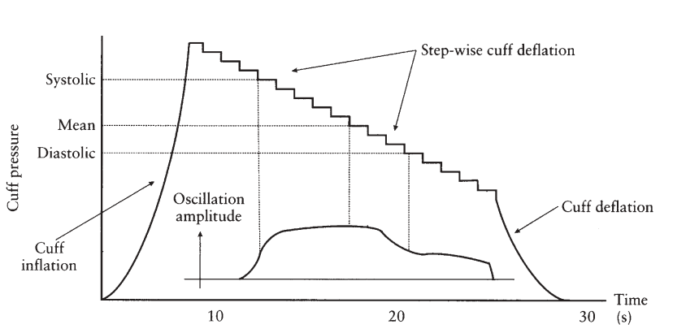
|
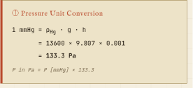 |
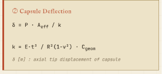 |
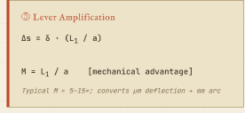 |
|
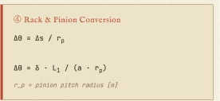 |
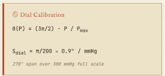 |
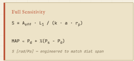 |
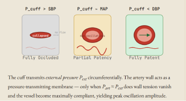
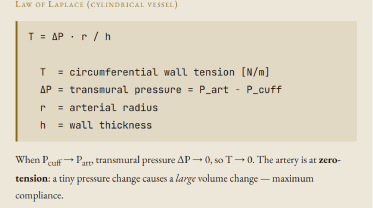
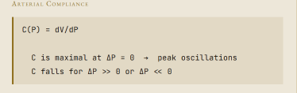
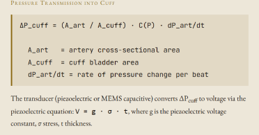
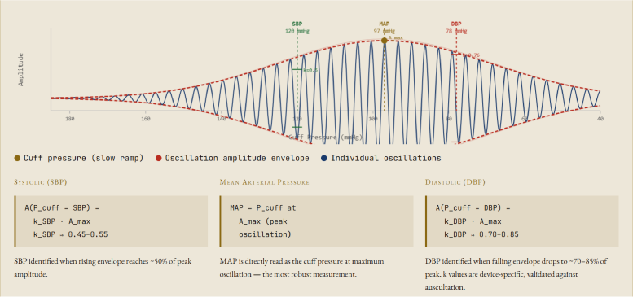
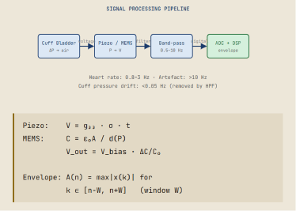
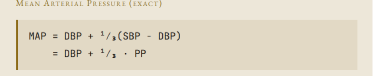
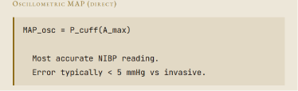
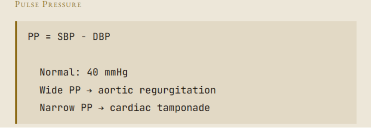
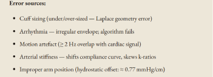
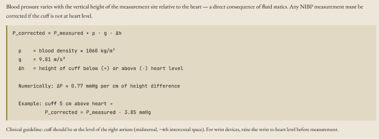
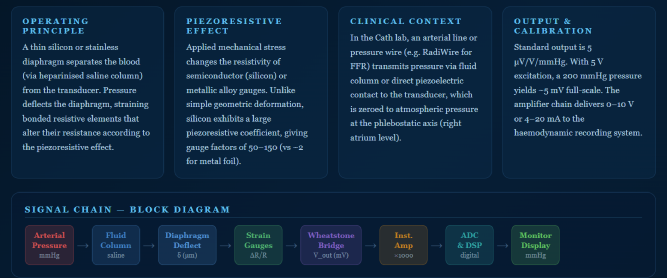
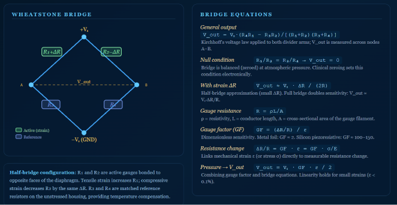
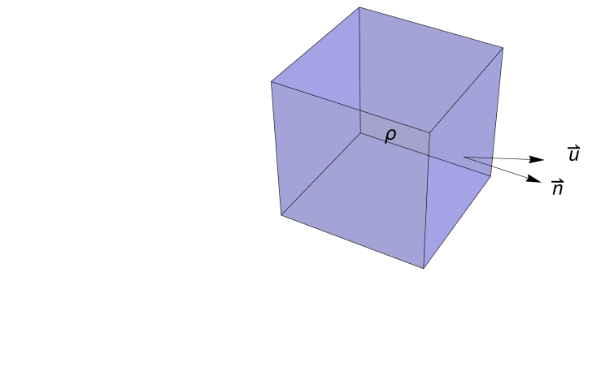
\[ \frac{\partial}{\partial t}\int_V\; \rho\; dV =-\int_S \rho\; \vec{u}\cdot\vec{n}\;dS \]
\[ \frac{\partial}{\partial t}\int_V\; \rho\; dV =-\int_S \rho\; \vec{u}\cdot\vec{n}\;dS \]
\[ \int_V\; \frac{\partial \rho}{\partial t}\;+\nabla \cdot (\rho \vec{u})\; dV =0\]
\[\frac{\partial \rho}{\partial t}\;+\nabla \cdot (\rho \vec{u})\;=\;0\]
\[ \frac{\partial \rho}{\partial t}\;+ \vec{u}\cdot\nabla\rho\; + \rho\nabla\cdot\vec{u}=0 \]
\[ \overbrace{\frac{\partial \rho}{\partial t}\;+ \vec{u}\cdot\nabla\rho\;}^\text{material derivative} +\rho\nabla\cdot\vec{u}=0 \]
\[ \frac{D \rho}{D t}\; +\rho\nabla\cdot\vec{u}=0 \]
Assuming incompressibility (constant density $\rho$)
\[ \frac{D \rho}{D t}\;=0 \implies \nabla\cdot\vec{u}=0 \]
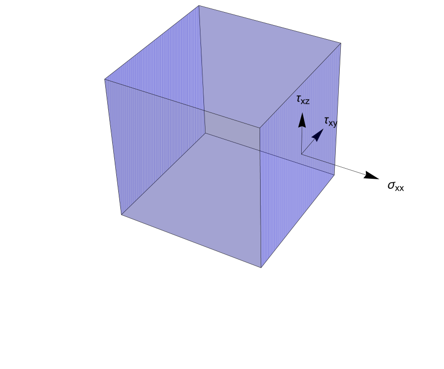
Shear stresses: $\sigma_{ij}$, force in direction normal: $F_i$
\[\delta F_i= \frac{\partial \sigma_{ij}}{\partial x_j}\delta V\]
\[ p =\sigma_{kk}/3 \iff \Sigma = -p \; I + \mathbb{S}\]
\[ p =\sigma_{kk}/3 \iff \Sigma = -p\; I + \mathbb{S}\]
\[ \overbrace{-\nabla p \delta V+\nabla\cdot\mathbb{S}}^\text{force}\;=\overbrace{\rho \frac{D \vec{u}}{Dt}}^\text{mass $\times$ acceleration}\]
\[\rho(\frac{\partial \vec{u}}{\partial t}+ \vec{u}\cdot\nabla\vec{u})\;= -\nabla p \delta V+\nabla\cdot\mathbb{S}\]
Simplifying assumptions
\[\color{green}{\frac{\partial \sigma_{ij}}{\partial x_j}=\mu \frac{\partial^2 \vec{u}}{\partial x_j^2}}\]
\[ \rho(\frac{\partial \vec{u}}{\partial t}+ \vec{u}\cdot\nabla\vec{u})\;= -\nabla p+ \rho\; g \nabla h + \mu \nabla^2 \vec{u}\]
\[\color{red}{ \rho(\frac{\partial \vec{u}}{\partial t}+ \vec{u}\cdot\nabla\vec{u})\;= -\nabla p+ \rho\; g \nabla h + \mu \nabla^2 \vec{u} }\]
\[\color{red}{ \rho(\frac{\partial \vec{u}}{\partial t}+ \vec{u}\cdot\nabla\vec{u})\;= -\nabla p+ \rho\; g \nabla h + \mu \nabla^2 \vec{u} }\]
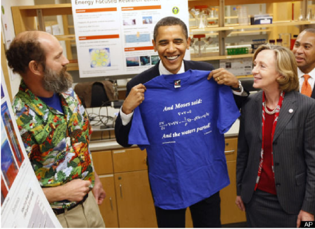
\[ \rho(\frac{\partial \vec{u}}{\partial t}+ \vec{u}\cdot\nabla\vec{u})\;= -\nabla p+ \rho\; g \nabla h + \mu \nabla^2 \vec{u} \]
\[ \rho(\frac{\partial \vec{u}}{\partial t}+ \vec{u}\cdot\nabla\vec{u})\;= -\nabla p+\cancelto{\text{ignore}} {\rho\; g \nabla h} + \cancelto{0}{\mu \nabla^2 \vec{u}} \]
\[ \rho(\frac{\partial \vec{u}}{\partial t}+ \vec{u}\cdot\nabla\vec{u})\;= -\nabla p \]
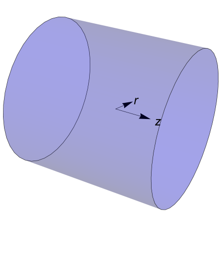
\[ \rho(\frac{\partial \vec{u}}{\partial t}+ \vec{u}\cdot\nabla\vec{u})\;= -\nabla p \]
Inviscid, no acceleration , incompressibility and symmetries of pipe (no radial or angular dependence)
\[\rho \; u \frac{du}{dr}=-\frac{dp}{dr}\;\iff\;\frac{d}{dr}(\frac{\rho u^2}{2}+p)=0 \]
\[ \overbrace{\frac{\rho u^2}{2}+ p= \text{constant}}^{\color{red}{\text{Bernoulli Equation}}} \]
Balancing inertial and viscous forces:
\[ 2\pi r L\;\mu\;\frac{du}{dr}=\Delta p \;\pi r^2\]
Solving the differential equation with
$u(0)=u_\text{center}$ and $u(R)=0$.
\[ u(r)=\int^R_r \frac{\Delta P}{2\mu L} \;ds\;=\;\frac{\Delta P (R^2-r^2)}{4 \mu L} \]
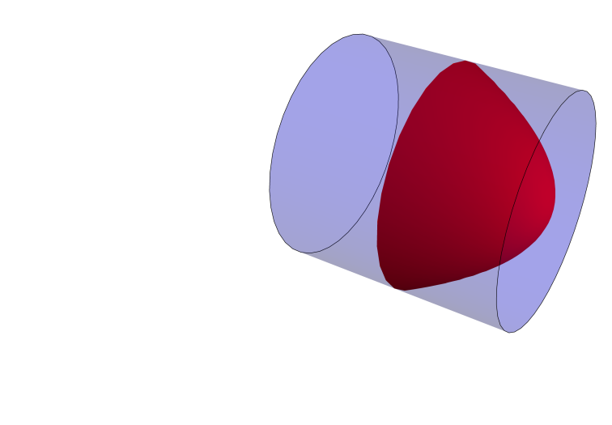
\[Q=\int_S \vec{u}\cdot\vec{n} \;dS =\int_0^R\int_0^{2\pi} \frac{\Delta P (R^2-r^2)}{4 \mu L}\; r dr d\theta=\frac{\pi\Delta P R^4}{8\mu L} \]
\[\overbrace{Q\;=\;\frac{\pi\Delta P R^4}{8\mu L}}^\text{\color{red}{Poiseuille Hagen Equation}} \]
Let $Z$ be resistance:
\[Z\;=\;\frac{\Delta P}{Q}\;=\; \frac{8\mu L}{\pi R^4}\]
\[\rho_\text{blood}\approx 1.05 \times 10^3\; \text{kg}\cdot\text{m}^{-3}\]
\[\Delta P =\frac{\rho\; \Delta v^2}{2}\]
\[\Delta P \;=\;\frac{1.05 \times 10^3\Delta v^2}{2} \text{kg}\cdot \text{m}^{-3}\cdot \text{m}^2\cdot\text{s}^{-2}\;=\; \frac{1.05 \times 10^3\Delta v^2}{2}\text{Pa}\]
\[\Delta P \;=\; \;\frac{1.05 \times 10^3\;\Delta v^2}{2} \frac{760 \;\text{mm Hg}}{ 10^5\; \text{Pa}}\times\text{Pa}\]
\[\Delta P \;=\; \frac{1.05 \times 10^3 \times 760\; \Delta v^2}{2\times 10^5}\;\text{mm Hg}\]
\[\Delta P \approx 4 \;\Delta v^2\;\text{mm Hg}\]
\[\Delta P \approx \Large{\color{red}{4}}\;\; \Delta v^2\;\text{mm Hg}\]
\[\Delta v^2= v_1^2 -v_2^2 \approx v_1^2,\;\because v_2 <1 \implies v_2^2 \ll 1\]
\[\color{red}\Large{\Delta P= 4\; v^2}\]
Self Reflection